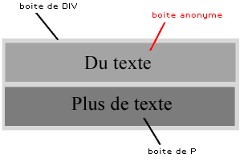
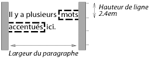
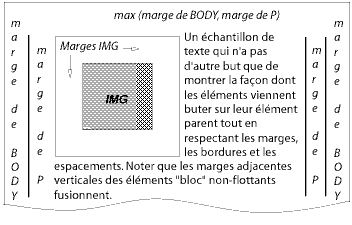
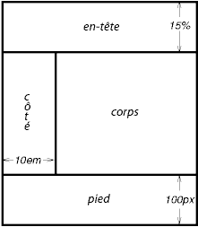
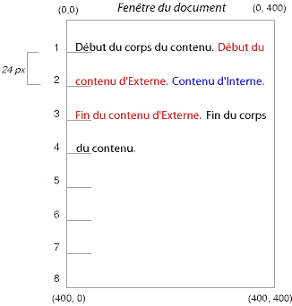
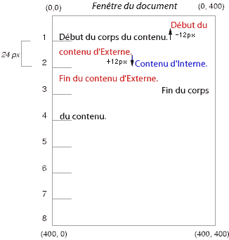
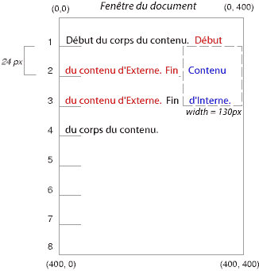
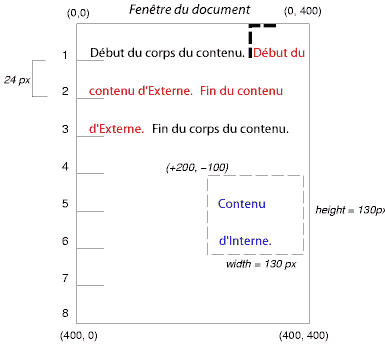
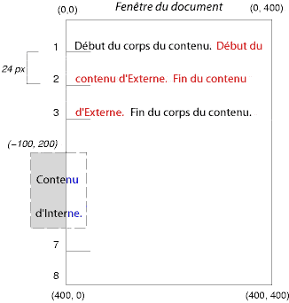
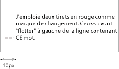

Voici une autre illustration d'un flottant qui déborde sur les bordures d'éléments dans le flux normal.

Une image flottante qui cache les bordures des boîtes de bloc qu'elle chevauche.
Contenu
Ce chapitre 9 et le suivant décrivent le modèle de mise en forme visuel : l'interprétation par un agent utilisateur de l'arbre du document et du rendu de celui-ci par un média visuel .
Dans ce modèle, chaque élément de l'arbre produit zéro ou plusieurs boîtes selon le modèle de la boîte. La construction de ces boîtes est gouvernée par :
Les propriétés définies dans ce chapitre et le suivant concernent les médias continus et les médias paginés. Cependant, les propriétés de marge ont une signification particulière pour les médias paginés (voir le modèle de la page pour les détails).
Le modèle de mise en forme visuel ne précise pas tous les aspects de la mise en forme (ex. il ne spécifie pas d'algorithme pour l'interlettrage). Les agents utilisateurs conformes peuvent se comporter différemment pour les points de formatage qui ne sont pas abordés dans cette spécification.
Les agents utilisateurs pour médias continus offrent généralement une zone de visualisation (une fenêtre ou une autre zone d'affichage sur un écran) grâce auquel les utilisateurs peuvent consulter un document. Les agents utilisateurs peuvent changer l'affichage du document quand cet espace est redimensionné (voir le bloc conteneur initial). Si la zone de visualisation est plus petite que le bloc conteneur initial, l'agent utilisateur devrait proposer un mécanisme de défilement. Dans un canevas, il ne peut y avoir plus d'une zone de visualisation, les agents utilisateurs pouvant néanmoins rendre plusieurs canevas (c.à.d, présenter des vues différentes du même document).
En CSS2, les positions et les tailles d'un grand nombre de boîtes sont calculées en fonction des bords d'une boîte rectangulaire ; on l'appelle un bloc conteneur. La plupart des boîtes générées se comportent comme des blocs conteneurs pour les boîtes qui en sont les descendantes : on dit que la boîte "établit" le bloc conteneur de ses descendants. L'expression "le bloc conteneur d'une boîte" signifie "le bloc conteneur dans lequel se trouve la boîte", et non la propre boîte que celle-ci génère.
Chaque boîte se voit attribuer une position vis-à-vis de son bloc conteneur, celle-ci n'est pas forcément confinée à l'intérieur de ce conteneur et peut en déborder.
La racine de l'arbre du document génère une boîte qui fait office de bloc conteneur initial pour les constructions subséquentes.
On peut spécifier la largeur du bloc conteneur initial de l'élément racine avec la propriété 'width'. Quand celle-ci a la valeur 'auto', c'est l'agent utilisateur qui fournit cette largeur initiale (par exemple en utilisant la largeur effective de la zone de visualisation).
On peut aussi spécifier la hauteur du bloc conteneur initial de l'élément racine avec la propriété 'height'. Quand celle-ci a la valeur 'auto', la hauteur du bloc conteneur va s'allonger pour prendre en compte le contenu du document.
Le bloc conteneur initial ne peut pas être positionné ou être flottant (c.à.d., les agents utilisateurs ignorent les propriétés 'position' et 'float' de l'élément racine).
Les détails concernant la méthode de calcul des dimensions d'un bloc conteneur sont abordés dans le chapitre 10 suivant.
Les paragraphes suivants décrivent les types de boîtes susceptibles d'être générées en CSS2. Le type d'une boîte affecte en partie son comportement dans le modèle de mise en forme visuel. La propriété 'display', décrite plus loin, spécifie le type d'une boîte.
Les éléments de type bloc sont ceux des éléments du document source dont le rendu visuel forme un bloc (ex. les paragraphes). La propriété 'display' admet des valeurs qui confèrent un type bloc à un élément : 'block', 'list-item', 'compact' et 'run-in' (dans certains cas ; voir les passages traitant des boîtes compactes et des boîtes en enfilade), et 'table'.
Les éléments de type bloc génèrent une boîte de bloc principale qui ne contient que des boîtes de bloc. La boîte de bloc principale établit le bloc conteneur des boîtes des descendants et du contenu généré, c'est aussi elle qui intervient dans le schéma de positionnement. La boîte de bloc principale participe au contexte de mise en forme de type bloc.
D'autres éléments de type bloc génèrent des boîtes supplémentaires hors de la boîte principale : ceux des éléments qui ont une valeur 'list-item' et ceux qui ont des marqueurs. Ces boîtes se positionnent en fonction de la boîte principale.
Dans un document tel que celui-ci :
<DIV> Du texte <P>Plus de texte </DIV>À supposer que les éléments DIV et P aient tous deux la valeur 'display: block', l'élément DIV accueille à la fois un contenu de type en-ligne et un contenu de type bloc. Pour illustrer leur formatage, nous considérons que "Du texte" est contenu dans une boîte de bloc anonyme.
 [D]
Schéma montrant trois boîtes, l'une d'entre elles est anonyme.
Autrement dit, quand une boîte de bloc (comme ici celle produite par l'élément DIV) contient une autre boîte de bloc (comme l'élément P), alors on la contraint à n'avoir que des boîtes de bloc, les éléments de type en-ligne étant emballés dans une boîte de bloc anonyme.
Ce modèle s'appliquerait à l'exemple suivant :
/* Note : les agents utilisateurs en HTML peuvent ne pas respecter ces règles */
BODY { display: inline }
P { display: block }
Ces règles étant appliquées à ce document HTML :
<!DOCTYPE HTML PUBLIC "-//W3C//DTD HTML 4.0 Transitional//EN"> <HEAD> <TITLE>Un texte anonyme interrompu par un bloc</TITLE> </HEAD> <BODY> Voici un texte anonyme avant le P. <P>Ceci est le contenu de P.</P> Voici un texte anonyme après le P. </BODY>
L'élément BODY contient un morceau (noté C1) de texte anonyme suivi par un élément de type bloc, suivi encore par un autre morceau (C2) de texte anonyme. La mise en forme finale aboutirait à une boîte de bloc anonyme pour l'élément BODY, celle-ci contiendrait une boîte de bloc anonyme enveloppant C1, la boîte de bloc de l'élément P et une autre boîte de bloc anonyme pour C2.
Les propriétés des boîtes anonymes héritent des valeurs des propriétés de la boîte non-anonyme qui les contient (par exemple dans le schéma au-dessus, celle de l'élément DIV). Les propriétés qui ne sont pas héritées conservent leur valeur initiale. Par exemple dans le schéma, la boîte anonyme hérite de la police de l'élément DIV mais ses marges auront une valeur de 0.
Les éléments de type en-ligne sont ceux des éléments du document source qui n'ont pas la forme de nouveaux blocs de contenu ; ce contenu est distribué en lignes (ex. des parties de texte mises en exergue au sein d'un paragraphe, des images dans une ligne, etc.). La propriété 'display' admet des valeurs qui confèrent un type en-ligne à un élément : 'inline', 'inline-table', 'compact' et 'run-in' (dans certains cas, voir les passages traitant des boîtes compactes et des boîtes en enfilade). Les éléments de type en-ligne génèrent des boîtes en-ligne.
Les boîtes en-ligne peuvent participer à plusieurs contextes de mise en forme :
Dans cet extrait de document :
<P>Du texte <EM>accentué</em> en exemple</P>
L'élément P génère une boîte de bloc contenant plusieurs boîtes en-ligne. Une boîte en-ligne pour "accentué" est produite par l'élément de type en-ligne (EM), mais c'est un élément de type bloc (P) qui génère les autres boîtes en-ligne pour "Du texte" et "en exemple". Ces dernières sont appelées boîtes en-ligne anonymes, car elles ne sont pas associées à un élément en-ligne.
Les boîtes de ce genre héritent des propriétés de celles de leur parent de type
bloc. Les propriétés non transmissibles conservent leur valeur initiale. Dans l'exemple
précédent, la couleur des boîtes anonymes en-ligne initiales
est héritée de l'élément P, mais leurs fonds restent transparents.
Pour cette spécification, on emploiera simplement l'expression boîte anonyme pour désigner les boîtes anonymes de type en-ligne ou bloc, quand le contexte détermine sans ambiguïté leur type.
D'autres types de boîtes anonymes sont produites lors de la mise en forme des tables.
Le comportement d'une boîte compacte se définit ainsi :
La position de la boîte compacte dans la marge est la suivante : elle se trouve en dehors (à droite ou à gauche) de la première boîte de ligne du bloc, et elle en affecte le calcul de la hauteur. La propriété 'vertical-align' de la boîte compacte détermine sa position verticale en fonction de cette boîte de ligne. La boîte compacte a toujours une position horizontale dans la marge de la boîte de bloc.
Un élément dont le formatage ne tient pas sur une ligne ne peut pas se trouver dans la marge de l'élément qui le suit. Par exemple en HTML, un élément avec une valeur 'compact' et qui contient un élément BR aura toujours un type de boîte bloc (en considérant que le comportement par défaut de BR consiste en l'insertion d'un caractère de mise à la ligne). Pour le placement d'un texte sur plusieurs lignes dans la marge, la propriété 'float' est souvent plus appropriée.
Voici l'illustration d'une boîte compacte :
<!DOCTYPE HTML PUBLIC "-//W3C//DTD HTML 4.0//EN">
<HTML>
<HEAD>
<TITLE>Un exemple de boîte compacte</TITLE>
<STYLE type="text/css">
DT { display: compact }
DD { margin-left: 4em }
</STYLE>
</HEAD>
<BODY>
<DL>
<DT>Court
<DD><P>Ici une description.
<DT>Trop long pour tenir dans la marge
<DD><P>Ici une autre description.
</DL>
</BODY>
</HTML>
Cet exemple pourrait être rendu ainsi :
Court Ici une description.
Trop long pour la marge
Ici une autre description.
On peut utiliser la propriété 'text-align' pour aligner l'élément compacte dans la marge : contre le bord gauche de la marge (avec la valeur 'left'), contre le bord droit ('right') ou au centre ('center'). La valeur 'justify' ne s'applique pas, celle-ci sera considérée comme étant 'left' ou 'right', selon la valeur de la propriété 'direction' de l'élément de type bloc dans les marges duquel l'élément compact se trouve (si la valeur de la propriété 'direction' est 'ltr', ce sera 'left', si c'est 'rtl', ce sera 'right').
Consulter le chapitre traitant du contenu généré pour des informations sur l'interaction entre les boîtes compactes et le contenu généré.
Le comportement d'une boîte en enfilade se définit ainsi :
Une boîte en enfilade présente un intérêt pour les titres en enfilade, ainsi cet exemple :
<!DOCTYPE HTML PUBLIC "-//W3C//DTD HTML 4.0//EN">
<HTML>
<HEAD>
<TITLE>Un exemple de boîte en enfilade</TITLE>
<STYLE type="text/css">
H3 { display: run-in }
</STYLE>
</HEAD>
<BODY>
<H3>Un titre en enfilade.</H3>
<P>Et un paragraphe qui le suit.
</BODY>
</HTML>
Cet exemple pourrait être rendu ainsi :
Un titre en enfilade. Et un paragraphe qui le suit.
Les propriétés de l'élément en enfilade sont héritées de son parent dans la source, et non de celles de la boîte de bloc dont il fait visuellement partie.
Consulter le chapitre traitant du contenu généré pour des informations sur l'interaction entre les boîtes en enfilade et le contenu généré.
| Valeur : | inline | block | list-item | run-in | compact | marker | table | inline-table | table-row-group | table-header-group | table-footer-group | table-row | table-column-group | table-column | table-cell | table-caption | none | inherit |
| Initiale : | inline |
| S'applique à : | tous les éléments |
| Héritée : | non |
| Pourcentage : | sans objet |
| Médias : | all |
Les valeurs de cette propriété ont le sens suivant :
Noter qu'une valeur 'none' ne crée pas de boîte invisible, elle ne crée pas de boîte du tout. CSS comprend des mécanismes permettant la génération de boîtes dans la structure de formatage, boîtes qui influencent la mise en forme mais qui ne sont pas visibles. Consulter la partie traitant de la visibilité pour les détails ;
Noter que, malgré la valeur initiale 'inline' de la propriété 'display', les règles de la feuille de style par défaut de l'agent utilisateur peuvent surclasser celle-ci. Voir dans l'annexe traitant de la proposition de feuille de style pour HTML 4.0.
Voici des exemples pour la propriété 'display' :
P { display: block }
EM { display: inline }
LI { display: list-item }
IMG { display: none } /* Les images ne sont pas affichées */
Les agents utilisateurs conformes pour HTML peuvent ignorer la propriété 'display'.
En CSS2, trois schémas de positionnement peuvent déterminer l'emplacement d'une boîte :
Les propriétés 'position' et 'float' déterminent lequel des algorithmes de positionnement employer pour le calcul de l'emplacement d'une boîte.
| Valeur : | static | relative | absolute | fixed | inherit |
| Initiale : | static |
| S'applique à : | tous les éléments, sauf à un contenu généré |
| Héritée : | non |
| Pourcentage : | sans objet |
| Médias : | visuel |
Les valeurs de cette propriété ont le sens suivant :
@media screen {
H1#first { position: fixed }
}
@media print {
H1#first { position: static }
}
« errata : Voir la proposition pour la nouvelle valeur 'static-position' »
On dit qu'un élément est positionné quand la valeur de sa propriété 'position' est autre que 'static'. Ces éléments génèrent des boîtes positionnées qui sont disposées selon les quatre propriétés suivantes :
| Valeur : | <longueur> | <pourcentage> | auto | inherit |
| Initiale : | auto |
| S'applique à : | ceux des éléments positionnés |
| Héritée : | non |
| Pourcentage : | se rapporte à la hauteur du bloc conteneur |
| Médias : | visuel |
Cette propriété définit le décalage du bord haut du contenu de la marge
d'une boîte sous le bord haut de la boîte du bloc conteneur.
| Valeur : | <longueur> | <pourcentage> | auto | inherit |
| Initiale : | auto |
| S'applique à : | ceux des éléments positionnés |
| Héritée : | non |
| Pourcentage : | se rapporte à la largeur du bloc conteneur |
| Médias : | visuel |
Cette propriété définit le décalage du bord droit du contenu de la marge
d'une boîte à gauche du bord droit de la boîte du bloc conteneur.
| Valeur : | <longueur> | <pourcentage> | auto | inherit |
| Initiale : | auto |
| S'applique à : | ceux des éléments positionnés |
| Héritée : | non |
| Pourcentage : | se rapporte à la hauteur du bloc conteneur |
| Médias : | visuel |
Cette propriété définit le décalage du bord bas du contenu de la marge
d'une boîte au-dessus du bord bas de la boîte du bloc conteneur.
| Valeur : | <longueur> | <pourcentage> | auto | inherit |
| Initiale : | auto |
| S'applique à : | ceux des éléments positionnés |
| Héritée : | non |
| Pourcentage : | se rapporte à la largeur du bloc conteneur |
| Médias : | visuel |
Cette propriété définit le décalage du bord gauche du contenu de la marge
d'une boîte à droite du bord gauche de la boîte du bloc conteneur.
Les significations des valeurs de ces quatre propriétés sont :
Pour les boîtes en position absolue, les décalages sont déterminés par rapport à la boîte du bloc conteneur. Pour les boîtes en position relative, ils sont déterminés par rapport aux bords externes de la boîte elle-même (c.à.d., la boîte reçoit un emplacement dans le flux normal, puis elle est décalée de cet emplacement en fonction des valeurs des propriétés de position).
Les boîtes dans un flux normal appartiennent à un contexte de mise en forme, bloc ou en-ligne, mais pas les deux en même temps. Les boîtes de bloc participent à un contexte de mise en forme bloc, les boîtes en-ligne à un contexte de mise en forme en-ligne.
Dans un contexte de mise en forme bloc, les boîtes sont placées l'une après l'autre, verticalement, en commençant en haut du bloc conteneur. Les propriétés de marge régissent la distance verticale entre deux blocs successifs. Dans ce contexte de mise en forme, les marges verticales de deux boîtes de bloc adjacentes fusionnent.
En contexte bloc, le bord externe gauche de chaque boîte touche le bord gauche de son bloc conteneur (c'est le bord droit dans un formatage de droite à gauche). Ceci reste vrai en présence de flottants (bien que le contenu de l'aire de la boîte puissent rétrécir de ce fait).
Pour des informations au sujet des fins de page avec les médias paginés, consulter le passage traitant des fins de page admises.
Dans un contexte de mise en forme en-ligne, les boîtes sont placées horizontalement, l'une après l'autre, en commençant en haut du bloc conteneur. Les marges, bordures et espacements sont conservées entre celles-ci. Les boîtes peuvent être alignées verticalement de différentes façons : selon leurs hauts ou leurs bas, ou selon les lignes de base du texte qui y est contenu. On appelle l'aire rectangulaire, qui contient les boîtes sur une ligne, une boîte de ligne.
La largeur d'une boîte de ligne dépend de son bloc conteneur. La hauteur d'une boîte de ligne est déterminée en fonction des règles précisées au chapitre sur les calculs de la hauteur de ligne. La hauteur d'une boîte de ligne est toujours suffisante pour chacune des boîtes que celle-ci contient. Cependant, elle peut être plus grande que la plus haute des boîtes contenues (quand, par exemple, celles-ci sont alignées selon leur ligne de base). L'alignement vertical d'une boîte dont la hauteur est inférieure à celle de sa boîte de ligne, est déterminé par la propriété 'vertical-align'.
Quand des boîtes en-ligne ne peuvent pas tenir dans une seule boîte de ligne, celles-ci se répartissent sur deux ou plusieurs boîtes de ligne empilées verticalement. Ainsi, un paragraphe consiste en un empilement vertical de boîtes de ligne. Ces boîtes de ligne s'empilent les unes sur les autres, sans séparation entre elles, et elles ne se chevauchent jamais.
En général, le bord gauche d'une boîte de ligne touche celui de son bloc conteneur. Cependant, il peut se trouver des boîtes flottantes entre le bord du bloc conteneur et celui de la boîte de ligne. Ainsi, bien que, dans le même contexte de mise en forme en-ligne, les boîtes de ligne aient la plupart du temps la même largeur, celle-ci peut varier si l'espace horizontal disponible se réduit du fait de la présence de ces flottants. Par contre, les boîtes de ligne varient généralement en hauteur dans le même contexte de mise en forme en-ligne (par exemple une ligne peut contenir une image de grande hauteur, les autres ne contenant que du texte).
Quand la largeur totale des boîtes en-ligne est inférieure à celle de la boîte de ligne qui les contient, leur distribution horizontale dans celle-ci est déterminée par la propriété 'text-align'. Si cette propriété a la valeur 'justify', l'agent utilisateur peut étirer les boîtes en-ligne en conséquence.
La largeur d'une boîte en-ligne ne pouvant excéder celle d'une boîte de ligne,
celles qui sont trop longues sont découpées en plusieurs boîtes qui sont réparties
sur plusieurs boîtes de ligne.
Quand une boîte en ligne est découpée, les marges, les bordures et l'espacement
n'ont pas de représentation visuelle à l'endroit où la coupure intervient.
Les marges, bordures et espacements n'ont pas de représentation
visuelle à l'endroit où ces coupures interviennent. Les formatages des marges, bordures et
espacements peuvent ne pas être entièrement définis si la coupure intervient
dans une imbrication bi-directionnelle.
Les boîtes en-ligne peuvent aussi être découpées à l'intérieur d'une même boîte de ligne du fait du traitement bi-directionnel du texte.
Voici un exemple d'assemblage de boîte en-ligne. Le paragraphe suivant (produit par l'élément HTML de type bloc P) contient un texte anonyme parsemé d'éléments EM et STRONG :
<P>Plusieurs <EM>mots accentués</EM> apparaissent <STRONG>dans cette</STRONG> phrase.</P>
L'élément P génère une boîte de bloc qui contient cinq boîtes en-ligne, dont trois sont anonymes :
Pour la mise en forme du paragraphe, l'agent utilisateur fait glisser les cinq boîtes dans des boîtes de ligne. Ici, la boîte générée par l'élément P établit le bloc conteneur pour les boîtes de ligne. Si celui-ci est suffisamment grand, toutes les boîtes de ligne vont pouvoir tenir dans une seule boîte :
Plusieurs mots accentués apparaissent dans cette phrase.
Dans le cas contraire, les boîtes en-ligne seront découpées et réparties sur plusieurs boîtes de ligne. Le paragraphe précédent pourrait être découpé comme ceci :
Plusieurs mots accentués apparaissent dans cette phrase.ou comme cela :
Plusieurs mots accentués apparaissent dans cette phrase.
Dans ce dernier exemple, la boîte de l'élément EM a été découpée en deux boîtes EM (appelons-les "morceau1" et "morceau2"). Les marges, bordures, espacements ou encore les ornements de texte ne produisent aucun effet visible après "morceau1" ou avant "morceau2".
Voyons cet exemple :
<!DOCTYPE HTML PUBLIC "-//W3C//DTD HTML 4.0//EN">
<HTML>
<HEAD>
<TITLE>Exemple de flot en-ligne sur plusieurs lignes</TITLE>
<STYLE type="text/css">
EM {
padding: 2px;
margin: 1em;
border-width: medium;
border-style: dashed;
line-height: 2.4em;
}
</STYLE>
</HEAD>
<BODY>
<P>Il y a plusieurs <EM>mots accentués</EM> ici.</P>
</BODY>
</HTML>
Dépendant de la largeur de l'élément P, les boîtes pourraient être réparties comme ceci :
 [D]
Une fois l'emplacement d'une boîte déterminé, conformément au flux normal ou flottant, cette boîte peut être déplacée relativement à cette position. C'est ce qu'on appelle le positionnement relatif. Le décalage d'une boîte (B1) de cette manière n'a pas d'influence sur la boîte (B2) qui la suit : la boîte B2 reçoit un emplacement comme si la boîte B1 n'avait pas été décalée, et l'emplacement de B2 sera resté le même après l'application du décalage sur B1. Ainsi, le positionnement relatif peut impliquer le chevauchement des boîtes.
Une boîte en position relative conserve la taille qu'elle avait dans le flux normal, ainsi que les retours à la ligne et
la superficie originale qui lui était réservée.
Elle établit un nouveau bloc conteneur pour ses enfants dans le flux normal et les descendants positionnés.
Le chapitre sur les blocs conteneurs
précise les cas où une boîte en position relative établit un nouveau bloc conteneur.
Un élément génère une boîte en position relative quand la valeur de sa propriété 'position' est 'relative'. Son décalage est défini par les propriétés 'top', 'bottom', 'left' et 'right'.
Les propriétés 'left' et 'right' déplacent la boîte (ou les boîtes) horizontalement, sans changer sa taille (ou leur taille). Le déplacement se fait vers la droite pour la propriété 'left' et vers la gauche pour 'right'. Les boîtes n'étant ni découpées ni étirées par ces propriétés, les valeurs calculées pour le déplacement vérifient toujours l'égalité : déplacement gauche = - déplacement droit.
Quand les propriétés 'left' et 'right' ont la valeur 'auto' (qui est leur valeur initiale), les valeurs calculées pour le déplacement sont égales à "0" (c.à.d. que les boîtes restent à leur emplacement original).
Quand la propriété 'left' a la valeur 'auto', sa valeur calculée devient celle négative de la propriété 'right' (c.à.d. que les boîtes se déplacent vers la gauche de la quantité de cette valeur).
Et inversement, quand la propriété 'right' a la valeur 'auto'.
Quand aucune des propriétés 'left' et 'right' n'a la valeur 'auto', la position de la boîte se trouve sous l'effet d'une double contrainte, et une des deux propriétés sera ignorée. Cela dépend de la valeur de la propriété 'direction' ; lorsqu'elle a la valeur 'ltr', c'est la valeur de la propriété 'left' qui est retenue, celle de la propriété 'right' devenant la valeur négative de 'left', et inversement, lorsque la propriété 'direction' a la valeur 'rtl'.
Par exemple, ces deux feuilles de style sont équivalentes :
DIV.a8 { position: relative; left: -1em; right: auto }
DIV.a8 { position: relative; left: auto; right: 1em }
Les propriétés 'top' et 'bottom' gèrent le déplacement vertical des boîtes en position relative. Ces propriétés doivent également avoir des valeurs en opposition. Quand toutes deux ont la valeur 'auto', leurs valeurs calculées deviennent "0". Quand l'une d'elles a la valeur 'auto', celle-ci prend la valeur opposée de l'autre. Quand aucune des deux n'a la valeur 'auto', la valeur de la propriété 'bottom' sera ignorée (c.à.d. que la valeur calculée pour la propriété 'bottom' devient le négatif de celle de la propriété 'top').
Le mouvement dynamique des boîtes en position relative peut produire un effet d'animation dans une utilisation conjointe avec des scripts (voir également la propriété 'visibility'). On peut aussi employer le positionnement relatif comme une forme générale pour l'écriture en exposant ou en indice ; toutefois la hauteur de ligne n'est pas automatiquement ajustée pour tenir compte du positionnement. Voir les calculs des hauteurs de ligne pour des précisions.
D'autres exemples de positionnement relatif apparaissent dans le chapitre traitant de la comparaison entre le flux normal, les flottants et le positionnement absolu.
Une boîte flottante est déplacée vers la gauche ou la droite sur la ligne courante. La caractéristique la plus intéressante d'un flottant (ou boîte "flottée" ou "flottante") réside dans le fait que le contenu peut s'écouler le long de ses flancs (on peut empêcher ce comportement avec la propriété 'clear'). Ce contenu descend le long du flanc droit d'une boîte flottante à gauche et le long du flanc gauche pour celle flottante à droite. Voici une introduction au positionnement flottant et à l'écoulement du contenu ; la description de la propriété 'float' donne les règles précises régissant ce comportement.
Une boîte flottante doit avoir une largeur explicite (spécifiée par la propriété 'width' ou la largeur intrinsèque pour les éléments remplacés). Ces boîtes deviennent des boîtes de bloc qui sont mues vers la gauche ou la droite et qui vont buter sur le bord du bloc conteneur ou sur le bord externe d'un autre flottant. Leur haut s'aligne sur le haut de la boîte de ligne concernée (ou, quand il n'y a pas de boîte de ligne, sur le bas de la boîte de bloc précédente). Quand il n'y a pas assez de place pour le flottant dans la largeur de la ligne, celui-ci se déplace vers le bas, d'une ligne à l'autre, jusqu'à en trouver une suffisamment large.
Une boîte flottante se trouvant hors du flux normal, les boîtes de bloc non positionnées, crées avant et après elle, s'écoulent verticalement comme si celle-ci n'existait pas. Cependant, les boîtes de lignes, crées juste après la boîte flottante, se réduisent pour laisser de la place à celle-ci. Le contenu de la ligne, celui avant la boîte flottée, se répand dans la première ligne disponible contre l'autre bord de cette boîte.
Plusieurs flottants peuvent être adjacents, ce modèle s'applique aussi aux flottants adjacents dans la même ligne.
La règle suivante fait flotter à gauche toutes les boîtes des éléments IMG qui ont un attribut class="icon" (et leur applique une valeur de marge gauche de '0') :
IMG.icon {
float: left;
margin-left: 0;
}
Considérons la source HTML et la feuille de style suivantes :
<!DOCTYPE HTML PUBLIC "-//W3C//DTD HTML 4.0//EN">
<HTML>
<HEAD>
<TITLE>Exemple de flottants</TITLE>
<STYLE type="text/css">
IMG { float: left }
BODY, P, IMG { margin: 2em }
</STYLE>
</HEAD>
<BODY>
<P><IMG src=img.gif alt="Cette image pour illustrer les flottants.">
Un échantillon de texte qui n'a pas...
</BODY>
</HTML>
La boîte de l'élément IMG flotte à gauche. Le contenu qui le suit vient contre la droite du flottant, commençant sur la même ligne que celui-ci. Les boîtes de ligne se trouvant à droite du flottant sont raccourcies pour tenir compte de sa présence, celles-ci reprennent leur largeur "normale" (celle du bloc conteneur établi par l'élément P) après le flottant. Ce document pourrait apparaître ainsi :
 [D]
La mise en forme aurait été exactement la même si ce document avait été :
<BODY>
<P>Un échantillon de texte
<IMG src=img.gif alt="Cette image pour illustrer les flottants.">
qui n'a pas...
</BODY>
car le contenu se trouvant à gauche du flottant est déplacé par celui-ci et reformaté le long de son flanc droit.
Les marges des boîtes flottantes ne fusionnent jamais avec celles des boîtes adjacentes. Ainsi, dans l'exemple précédent, les marges verticales entre la boîte de P et la boîte flottée de IMG n'ont pas fusionné.
Un flottant peut chevaucher sur les autres boîtes du flux normal (par exemple quand une boîte proche de celui-ci a des marges négatives). Quand une boîte en-ligne déborde sur un flottant, le contenu, l'arrière-plan et les bordures de celle-ci apparaissent sur le flottant. Quand c'est une boîte de bloc, l'arrière-plan et les bordures de celle-ci apparaissent derrière le flottant, ceux-ci n'étant visibles qu'aux endroits où le flottant est transparent. Par contre, le contenu de la boîte de bloc passe avant le flottant.
Voici une autre illustration d'un flottant qui déborde sur les bordures d'éléments dans le flux normal.
Une image flottante qui cache les bordures des boîtes de bloc qu'elle chevauche.
L'exemple suivant démontre l'usage de la propriété 'clear' pour empêcher l'écoulement d'un contenu le long d'un flottant.
Supposons une règle telle que :
P { clear: left }
une mise en forme pourrait en être :
Cette propriété spécifie le flottement d'une boîte à gauche, à droite ou pas du tout. On peut l'employer pour des éléments générant des boîtes qui ne sont pas en position absolue. Voici la signification des valeurs que celle-ci admet :
Voici les règles précises qui gouvernent le comportement des flottants :
Cette propriété indique quels côtés d'une ou des boîtes d'un élément ne doivent pas être adjacents à une boîte flottante précédente. (Il peut arriver que l'élément lui-même ait des descendants flottants, la propriété 'clear' n'a alors aucun effet sur eux).
Cette propriété ne peut s'appliquer qu'aux élément de type bloc (dont les flottants). Dans le cas des boîtes compactes et en enfilade, la propriété s'applique à la boîte de bloc finale à laquelle celles-ci appartiennent.
Voici la signification des valeurs admises par la propriété quand on l'applique aux boîtes de bloc non flottantes :
Quand on applique cette propriétés aux éléments flottants, une modification des règles de leur positionnement intervient. On ajoute une contrainte supplémentaire (la dixième) :
Avec le modèle de positionnement absolu, une boîte est positionnée par rapport à son bloc conteneur. Celle-ci est entièrement retirée du flux normal (elle n'a aucune influence sur les éléments de même niveau de parenté survenant après). Les boîtes en position absolue établissent un nouveau bloc conteneur pour leurs descendants, ceux qui suivent le flux normal et ou ceux qui sont positionnés. Cependant, leurs contenus ne s'écoulent pas autour d'autres boîtes. Ces contenus peuvent, ou non, cacher ceux des autres boîtes, selon leur situation dans l'empilement des boîtes et leur chevauchement.
Dans cette spécification, quand on se réfère à un élément en position absolue (ou sa boîte), cela signifie que la propriété 'position' de celui-ci a les valeurs 'absolute' ou 'fixed'.
Le positionnement fixe est une variante du positionnement absolu. La seule différence est que le bloc conteneur d'une boîte en position fixe est établi par la zone de visualisation. Pour les médias continus, les boîtes en position fixe ne bougent pas quand on fait défiler le document. Sous cet angle, celles-ci ont un comportement similaire à celui des images d'arrière-plan fixes. Pour les médias paginés, ces boîtes se répètent sur chaque page. Par exemple, ceci peut présenter un intérêt pour placer une signature en bas de chacune d'entre elles
Les auteurs peuvent utiliser le positionnement fixe pour des présentations comme avec des cadres. Soit la mise en page suivante :
 [D]
Ceci pourrait être réalisé avec ce document HTML et ces règles de style :
<!DOCTYPE HTML PUBLIC "-//W3C//DTD HTML 4.0//EN">
<HTML>
<HEAD>
<TITLE>Un document avec des cadres en CSS2</TITLE>
<STYLE type="text/css">
BODY { height: 8.5in } /* Nécessaire pour les hauteurs en pourcentage plus bas */
#entete {
position: fixed;
width: 100%;
height: 15%;
top: 0;
right: 0;
bottom: auto;
left: 0;
}
#cote {
position: fixed;
width: 10em;
height: auto;
top: 15%;
right: auto;
bottom: 100px;
left: 0;
}
#corps {
position: fixed;
width: auto;
height: auto;
top: 15%;
right: 0;
bottom: 100px;
left: 10em;
}
#pied {
position: fixed;
width: 100%;
height: 100px;
top: auto;
right: 0;
bottom: 0;
left: 0;
}
</STYLE>
</HEAD>
<BODY>
<DIV id="entete"> ... </DIV>
<DIV id="cote"> ... </DIV>
<DIV id="corps"> ... </DIV>
<DIV id="pied"> ... </DIV>
</BODY>
</HTML>
Ces trois propriétés, 'display', 'position' et 'float', qui affectent la génération des boîtes et le positionnement, interagissent ainsi :
| Valeur spécifiée | Valeur calculée |
|---|---|
| inline-table | table |
| inline, run-in, compact, table-row-group, table-column, table-column-group, table-header-group, table-footer-group, table-row, table-cell, table-caption | block |
| autres | pareille à la valeur spécifiée |
Remarque : CSS2 ne spécifie pas de processus de mise en forme quand les valeurs de ces propriétés sont modifiées par le biais de scripts. Par exemple, que se passe-t-il pour un élément, dont la propriété 'width' a la valeur 'auto', quand il est repositionné ? Est-ce que l'écoulement des contenus est recommencé, ou est-ce que ceux-ci conservent leur formatage original ? La réponse ne se trouve pas dans ce document, les premières implémentations de CSS2 sont certainement divergentes sur ce point.
L'illustration des différences entre les positionnements en flux normal, relatif et absolu se fera à partir d'exemples basés sur cet extrait de document HTML :
<!DOCTYPE HTML PUBLIC "-//W3C//DTD HTML 4.0//EN">
<HTML>
<HEAD>
<TITLE>Comparaison entre les schémas de positionnement</TITLE>
</HEAD>
<BODY>
<P>Début du corps du contenu.
<SPAN id="Externe"> Début du contenu d'Externe.
<SPAN id="Interne"> Contenu d'Interne.</SPAN>
Fin du contenu d'Externe.</SPAN>
Fin du corps du contenu.
</P>
</BODY>
</HTML>
Avec ce document, nous supposerons les règles suivantes :
BODY { display: block; line-height: 200%;
width: 400px; height: 400px }
P { display: block }
SPAN { display: inline }
Pour chacun des exemples, les emplacements finaux des boîtes générées par les éléments Externe et Interne seront variables. Dans les dessins, les nombres à gauche indiquent la position des lignes en flux normal, celles-ci étant agrandies pour plus de clarté. Note : les échelles verticales et horizontales diffèrent selon les illustrations.
Considérons les déclarations CSS pour les IDs Externe et Interne, celles-ci ne modifiant pas le flux normal des boîtes :
#Externe { color: red }
#Interne { color: blue }
L'élément P ne contient que des éléments en-ligne, c.à.d. du texte anonyme en-ligne et deux éléments SPAN. Ainsi, tout le contenu est dans un contexte de mise en forme en-ligne, à l'intérieur d'un bloc conteneur établit par l'élément P lui-même, comme ceci :
 [D]
Pour illustrer l'effet du positionnement relatif, spécifions :
#Externe { position: relative; top: -12px; color: red }
#Interne { position: relative; top: 12px; color: blue }
Le texte suit un cours normal jusqu'à l'élément Externe. Celui-ci s'écoule alors pour occuper son volume dans le flux normal et prend ses marques, l'une étant représentée par la fin de la ligne 1. Ensuite, l'ensemble, constitué des boîtes en-ligne contenant le texte (qui est réparti sur trois lignes), est déplacé de la valeur '-12px' (vers le haut).
L'élément Interne, étant un enfant de Externe, devrait normalement voir son contenu poursuivre dans le flux après les mots "contenu d'Externe" (entre la ligne 1 et 2). Cependant, celui-ci étant lui-même placé relativement au contenu de Externe d'une valeur de '12px' (vers le bas), il va se retrouver à sa position de départ sur la ligne 2.
Noter que le contenu qui suit celui de l'élément Externe n'est pas affecté par le positionnement relatif de ce dernier.
 [D]
Noter que si le décalage de l'élément Externe avait été '-24px', le texte de celui-ci et le texte du corps du contenu se seraient chevauchés.
Voyons maintenant l'effet d'un flottement à droite sur le texte de l'élément Interne avec cette règle :
#Externe { color: red }
#Interne { float: right; width: 130px; color: blue }
Le texte suit le flux normal jusqu'à la boîte d'Interne, celle-ci étant hors du flot et flottant vers la marge droite (la propriété 'width' de la boîte est explicite). Les boîtes de ligne sur la gauche du flottant ont été réduites, le reste du texte du document se répartissant entre elles.
 [D]
« errata 2002-10-29 section 9.8.3 »
Voyons enfin, l'effet d'un positionnement absolu. Considérons les déclarations CSS suivantes pour Externe et Interne :
#Externe {
position: absolute;
top: 200px; left: 200px;
width: 200px;
color: red;
}
#Interne { color: blue }
ce qui positionne le sommet de la boîte d'Externe en fonction de son bloc conteneur. Celui-ci, pour une boîte positionnée donnée, est établi par l'ancêtre positionné de cette boîte qui est le plus proche (ou, s'il n'y en a pas, par le bloc conteneur initial, comme dans l'exemple qui suit). Le haut de la boîte d'Externe se trouve à '200px' en dessous du haut du bloc conteneur, et la gauche de sa boîte à '200px' du côté gauche de celui-ci. La boîte de l'élément enfant d'Externe suit le flot normal par rapport son parent.
Dans l'exemple suivant, nous avons une boîte en position absolue qui est un enfant d'une boîte en position relative. Bien que la boîte du parent, Externe, ne soit pas en réalité déplacée, le fait de spécifier la valeur 'relative' pour sa propriété 'position' lui permet d'être un bloc conteneur pour des descendants positionnés. Comme la boîte en-ligne d'Externe est découpée en morceaux répartis sur plusieurs lignes, les bords du haut et de gauche du premier d'entre eux (représentés en tirets épais dans le dessin) servent de références pour les décalages produits par les propriétés 'top' et 'left'.
#Externe {
position: relative;
color: red
}
#Interne {
position: absolute;
top: 200px; left: -100px;
height: 130px; width: 130px;
color: blue;
}
Ce qui donnerait le résultat suivant :
 [D]
Si on ne positionne pas la boîte d'Externe :
#Externe { color: red }
#Interne {
position: absolute;
top: 200px; left: -100px;
height: 130px; width: 130px;
color: blue;
}
Le bloc conteneur d'Interne devient le bloc conteneur initial (dans l'exemple). Voici dans ce cas où se placerait la boîte d'Interne :
 [D]
On peut employer le positionnement relatif ou absolu pour réaliser une marque de changement, comme dans l'exemple suivant. Ainsi avec ce document :
<P style="position: relative; margin-right: 10px; left: 10px;"> J'emploie deux tirets en rouge comme marque de changement. Ceux-ci vont "flotter" à gauche de la ligne contenant CE <SPAN style="position: absolute; top: auto; left: -1em; color: red;">--</SPAN>mot.</P>
Cet extrait pourrait être représenté ainsi :
 [D]
Premièrement, le paragraphe (dont les côtés du bloc conteneur sont tracés) suit le flux normal. Ce paragraphe est ensuite déplacé de '10px' à partir du bord gauche de celui-ci (c'est pourquoi on a laissé une marge de '10px' sur la droite, en prévision du décalage). Les deux tirets qui marquent le changement sont retirés du flux normal, puis placés sur la ligne concernée (en raison de 'top: auto'), et à '-1em' du bord gauche du bloc conteneur (celui établi par l'élément P à son emplacement final). En résultat, la marque de changement semble "flotter" à gauche de ladite ligne.
Dans les passages suivants, l'expression "devant" signifie au plus proche du spectateur qui regarde l'écran.
En CSS2, chaque boîte reçoit un emplacement selon trois dimensions. En plus de leurs positions horizontales et verticales, les boîtes s'échelonnent le long d'un "axe-z" et s'empilent les unes au-dessus des autres dans la mise en forme. Les positions sur l'axe-z sont particulièrement importantes lors des chevauchements visuels des boîtes. Cette partie traite de la façon dont celles-ci peuvent se positionner sur l'axe-z.
Chaque boîte participe d'un contexte d'empilement. Dans un contexte d'empilement donné, chacune des boîtes reçoit un entier pour son niveau dans l'empilement, cet entier représentant la position de la boîte sur l'axe-z, en rapport avec les autres boîtes de ce contexte. La valeur du niveau dans l'empilement d'une boîte peut être négative. Pour les boîtes situées au même niveau d'un contexte d'empilement, celles-ci s'empilent en partant du fond vers l'avant, en fonction de leur ordre dans l'arbre du document.
L'élément racine crée un contexte d'empilement racine, mais d'autres éléments peuvent établir des contextes d'empilement locaux. Les contextes d'empilement sont hérités. Un contexte d'empilement local est atomique, les boîtes d'autres contextes d'empilement ne pouvant interférer dans l'empilement des boîtes de celui-ci.
Un élément, établissant un contexte d'empilement local, génère une boîte avec deux ordres d'empilement : l'un pour le contexte d'empilement que lui-même crée (toujours égal à '0') et l'autre pour celui dont il fait lui-même partie (donné par la propriété 'z-index').
La boîte d'un élément occupe le même niveau dans l'empilement que celle de son parent, à moins que la propriété 'z-index' ne la contraigne à un autre niveau.
Pour une boîte positionnée, la propriété 'z-index' spécifie :
Voici les significations des valeurs :
Dans l'exemple suivant, les niveaux dans l'empilement des boîtes (nommées à partir de leur attribut "id") sont : "texte2"=0, "image"=1, "texte3"=2 et "texte1"=3. Le contexte d'empilement de "texte2" est hérité de la boîte racine. Les niveaux des autres boîtes étant spécifiés par la propriété 'z-index'.
<!DOCTYPE HTML PUBLIC "-//W3C//DTD HTML 4.0//EN">
<HTML>
<HEAD>
<TITLE>Positionnement selon l'axe-z</TITLE>
<STYLE type="text/css">
.pile {
position: absolute;
left: 2in;
top: 2in;
width: 3in;
height: 3in;
}
</STYLE>
</HEAD>
<BODY>
<P>
<IMG id="image" class="pile"
src="butterfly.gif" alt="L'image d'un papillon"
style="z-index: 1">
<DIV id="texte1" class="pile"
style="z-index: 3">
Ce texte se surimposera à l'image du papillon.
</DIV>
<DIV id="texte2">
Ce texte sera en-dessous de tout.
</DIV>
<DIV id="texte3" class="pile"
style="z-index: 2">
Ce texte se trouvera sous texte1, mais se surimposera à l'image du papillon.
</DIV>
</BODY>
</HTML>
Cet exemple illustre la notion de transparence. Par défaut, une boîte laisse voir celles situées en arrière à travers les zones transparentes de son contenu. Ici, chacune des boîtes vient recouvrir celles en dessous de façon transparente. On peut annuler ce comportement en employant l'une des propriétés d'arrière-plan.
Les caractères de certaines écritures s'écrivent de droite à gauche. Dans certains documents, notamment ceux en arabe ou en hébreu, et ceux avec un contexte de langues mixtes, plusieurs sens de lecture peuvent apparaître dans le texte d'un bloc (visuel) particulier. On appelle ce phénomène bi-directionnalité, ou "bidi" pour faire court.
Le standard Unicode ([UNICODE], chapitre 3.11), définit un algorithme complexe pour déterminer la directionalité d'un texte. Cet algorithme comporte une partie implicite, basée sur les propriétés des caractères, et des contrôles explicites, portant sur leurs incorporations et leurs contraintes. CSS2 s'appuie sur celui-ci pour atteindre un rendu bi-directionnel convenable. Les propriétés 'direction' et 'unicode-bidi' permettent aux auteurs de spécifier une adéquation des éléments et attributs d'un document avec cet algorithme.
Quand un document contient des caractères allant de droite à gauche, et si l'agent
utilisateur peut afficher ces caractères (dans les glyphes appropriés, et non pas avec des
substituts arbitraires comme des points d'interrogation, un code hexadécimal, un carré noir, etc.),
l'agent utilisateur doit utiliser l'algorithme bi-directionnel.
Les agents utilisateurs ne sont pas obligés d'appliquer l'algorithme bi-directionnel aux documents
qui ne contiennent que des caractères écrits de gauche à droite. Cette obligation est
en apparence univoque et, bien que les textes des documents en hébreu ou en arabe
ne contiennent pas tous des parties bi-directionnelles, ceux-ci sont plus enclins à en contenir (par exemple des nombres,
des extraits en d'autres langues) que ceux des documents écrits de gauche à droite
ne contiendraient de parties écrites de droite à gauche.
Comme le sens de lecture d'un texte dépend de la structure et de la sémantique du langage du document, ces propriétés ne devraient la plupart du temps être utilisées que par les auteurs de définitions de type de document (DTD) ou d'autres documents spéciaux. Lorsqu'une feuille de style par défaut spécifie ces propriétés, les auteurs et les utilisateurs ne devraient pas spécifier de règles pour les surclasser. Une exception typique : la suppression du comportement bidi d'un agent utilisateur, et sa transcription du yiddish (habituellement en caractères hébreux) en caractères latins pour répondre à une requête de l'utilisateur.
La spécification HTML 4.0 ([HTML40], chapitre 8.2) définit le comportement bi-directionnel des éléments HTML. Les agents utilisateurs conformes pour HTML peuvent ignorer les propriétés 'direction' et 'unicode-bidi' des feuilles de style des auteurs et des utilisateurs. Le mot "ignorer" signifie ici que, si une valeur des propriétés 'unicode-bidi' ou 'direction' entrait en conflit avec l'attribut HTML 4.0 "dir", c'est la valeur de ce dernier que les agents utilisateurs peuvent choisir d'honorer. Ceux-ci ne sont pas tenus de reconnaître les propriété 'direction' et 'unicode-bidi' pour être conformes à CSS2, à moins d'être capables de représenter du texte bi-directionnel (hormis le cas de HTML 4.0 comme indiqué précédemment).
Les règles de style pour obtenir le comportement bidi, tel que défini dans [HTML40], sont intégrées dans l'exemple de feuille de style. Voir aussi la spécification HTML 4.0 pour d'autres questions liées à la bi-directionnalité.
| Valeur : | ltr | rtl | inherit |
| Initiale : | ltr |
| S'applique à : | tous les éléments, mais voir les explications au-dessus |
| Héritée : | oui |
| Pourcentage : | sans objet |
| Médias : | visuel |
Cette propriété spécifie le sens d'écriture principal des blocs et le sens des incorporations et contraintes (voir 'unicode-bidi') pour l'algorithme bi-directionnel Unicode. En outre, elle spécifie le sens de mise en forme des colonnes des tables, le sens du débordement horizontal et l'emplacement d'une dernière ligne incomplète quand la propriété 'text-align' a pour valeur 'justify'.
Les valeurs de cette propriété ont la signification suivante :
La propriété 'unicode-bidi' doit avoir les valeurs 'embed' ou 'override' pour que la propriété 'direction' puisse agir sur les éléments de type en-ligne.
Remarque : Quand la propriété 'direction' est spécifiée pour les éléments des colonnes d'une table, celle-ci n'est pas héritée par les cellules des colonnes, les colonnes n'apparaissant pas dans l'arbre du document. Ainsi, on ne peut pas adresser facilement les règles d'héritage de l'attribut "dir", telles que décrites dans la spécification [HTML40], chapitre 11.3.2.1.
| Valeur : | normal | embed | bidi-override | inherit |
| Initiale : | normal |
| S'applique à : | tous les éléments, mais voir les explications au-dessus |
| Inherited: | non |
| Pourcentage : | N/A |
| Médias : | visuel |
Les valeurs de cette propriété ont la signification suivante :
L'ordonnancement final des caractères de chaque élément de type bloc est le même que celui décrit ci-dessus, comme si les caractères de contrôle bidi avaient été ajoutés, le balisage retiré et la succession de caractères qui en résulte, transmise à une implémentation de l'algorithme bi-directionnel Unicode comme du texte brut qui produirait les mêmes retours à la ligne que du texte stylé. Dans ce processus, les entités non textuelles, comme les images, sont traitées comme des caractères neutres, à moins que leur propriété 'unicode-bidi' n'ait une valeur autre que 'normal', auquel cas ces entités seraient considérées comme ayant une importance pour le sens indiqué par la propriété 'direction'.
Noter que pour autoriser l'écoulement de boîtes en-ligne dans une direction uniforme (soit entièrement de gauche à droite, ou inversement), plusieurs autres de ces boîtes en-ligne (dont des boîtes en-ligne anonymes) pourraient devoir être créées, et certaines d'entre elles devoir être découpées et ré-arrangées avant l'écoulement.
Du fait d'une limitation de l'algorithme Unicode à 15 niveaux d'incorporation, l'utilisation d'une autre valeur que 'normal' avec la propriété 'unicode-bidi' ne devrait se faire que de façon appropriée. Plus particulièrement, la valeur 'inherit' devrait faire l'objet d'une extrême prudence. Cependant, pour ceux des éléments destinés habituellement à un rendu en bloc (visuel), on préfèrera la spécification 'unicode-bidi: embed', pour conserver leur cohésion, dans le cas où leur propriété 'display' prendrait la valeur 'inline' (voir l'exemple plus loin).
Voici l'exemple d'un document XML contenant du texte bi-directionnel, qui illustre un principe de construction important : les auteurs de DTD devraient prendre en compte les questions bidi tant dans les éléments et attributs du langage concerné que dans les feuilles de style qui accompagnent le document. Celles-ci devraient être construites en distinguant les règles bidi des autres règles. Les règles bidi ne devraient pas être surclassées par d'autres feuilles de style, de manière à préserver les comportements bidi du langage du document ou du DTD.
Pour cet exemple, les lettres en minuscules représentent des caractères lus de façon inhérente de gauche à droite, et les lettres en majuscules, ceux de droite à gauche :
<HEBREU> <PAR>HÉBREU1 HÉBREU2 anglais3 HÉBREU4 HÉBREU5</PAR> <PAR>HÉBREU6 <EMPH>HÉBREU7</EMPH> HÉBREU8</PAR> </HEBREU> <ANGLAIS> <PAR>anglais9 anglais10 anglais11 HÉBREU12 HÉBREU13</PAR> <PAR>anglais14 anglais15 anglais16</PAR> <PAR>anglais17 <HE-QUO>HÉBREU18 anglais19 HÉBREU20</HE-QUO></PAR> </ANGLAIS>
S'agissant d'un document XML, c'est la feuille de style qui indique le sens d'écriture. Voici celle-ci :
/* Règles bidi */
HEBREW, HE-QUO {direction: rtl; unicode-bidi: embed}
ANGLAIS {direction: ltr; unicode-bidi: embed}
/* Règles de présentation */
HEBREW, ANGLAIS, PAR {display: block}
EMPH {font-weight: bold}
L'élément HEBREU forme un bloc avec un sens de lecture de droite à gauche, l'élément ANGLAIS un bloc avec un sens de lecture de gauche à droite. Les éléments PAR sont des blocs qui héritent du sens de lecture de leurs parents, Ainsi, les deux premiers sont lus en commençant en haut à droite, et les trois derniers en commençant en haut à gauche. Noter que les noms des éléments HEBREU et ANGLAIS ont été choisis exprès pour la démonstration ; en général, ceux-ci devraient l'être pour refléter la structure du document, sans référence à la langue employée.
L'élément EMPH, de type en-ligne, dont la propriété 'unicode-bidi' a la valeur 'normal' (la valeur par défaut), celui-ci n'a pas d'effet sur l'ordonnancement du texte. Par contre, l'élément HE-QUO crée une incorporation.
Quand la ligne a une grande longueur, la mise en forme de ce texte pourrait ressembler à ceci :
5UERBÉH 4UERBÉH anglais3 2UERBÉH 1UERBÉH
8UERBÉH 7UERBÉH 6UERBÉH
anglais9 anglais10 anglais11 13UERBÉH 12UERBÉH
anglais14 anglais15 anglais16
anglais17 20UERBÉH anglais19 18UERBÉH
Noter que l'incorporation de HE-QUO amène HÉBREU18 à se trouver à droite de anglais19.
Si les lignes devaient être découpées, cela pourrait ressembler à :
2UERBÉH 1UERBÉH
-ÉH 4UERBÉH anglais3
5UERB
-ÉH 7UERBÉH 6UERBÉH
8UERB
anglais9 anglais10 an-
glais11 12UERBÉH
13UERBÉH
anglais14 anglais15
anglais16
anglais17 18UERBÉH
20UERBÉH anglais19
HÉBREU18 devant être lu avant anglais 19, il se trouve dans la ligne au-dessus d'anglais19. Un simple découpage de la longue ligne de la mise en forme précédente n'aurait pas été correct. Noter aussi que la première syllabe de anglais19 aurait pu tenir sur la ligne d'avant, bien que, pour les mots lus de gauche à droite dans un contexte de lecture de droite à gauche, et vice versa, leurs césures soient généralement supprimées pour éviter l'affichage d'un tiret en plein milieu d'une ligne.